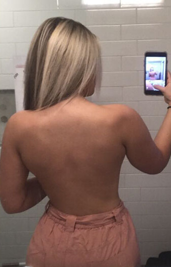
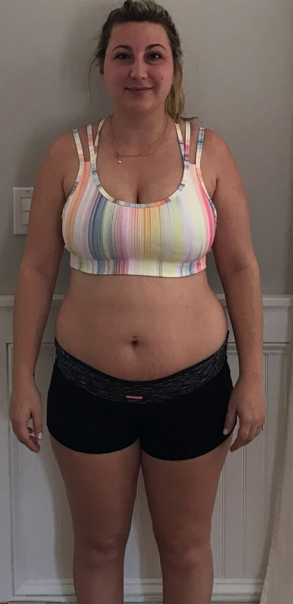

Dzień 1
Cześć, dziś opiszę Wam krótką historię tego, jak dostałam się do programu testowego. Proporcje mojej sylwetki są dość specyficzne. Po urodzeniu dziecka górna połowa ciała (brzuch i klatka piersiowa) wyglądała u mnie na znacznie większą niż dolna. To dziedziczna tendencja, moja mama ma taką samą figurę. Po ciąży wciąż mam duży brzuch z bardzo rozciągniętą skórą. Mimo tak młodego wieku, wyglądałam jak stara ciotka. Moja figura przypominała piłkę na cienkich nóżkach. No ale do rzeczy – otrzymałam produkt, który zdaniem producenta sprawi, że będę mieć talię osy, nawet lepszą niż przed ciążą. Trochę ciężko mi w to uwierzyć, ale spróbujmy! Nakleiłam ten plaster przed śniadaniem. Bałam się, że będzie się odklejał i mi przeszkadzał, ale nie! W ogóle go nie czuję na skórze.
Dzień 3
No cóż, przyklejanie plastrów mi nie przeszkadza, ale na razie nie widzę efektu. Na szczęście otrzymałam ten produkt za darmo, więc nie będzie mi szkoda, jeśli nie zadziała.
Dzień 5
Nie wiem czy to faktycznie działa czy to tylko efekt placebo, ale
czuję się bardziej energiczna, mam wrażenie, że zwiększyła mi się
wydajność i lepiej sypiam.
Dzień 6
Mój brzuch wciąż jest duży, ale teraz już na pewno wiem, że to nie
placebo. Mam wrażenie, że obwód talii zmniejszył się o jakieś 2
centymetry. Kropla w morzu, ale to dobry znak!
Dzień 7
Prosili mnie, żeby ważyć się co 7 dni, zmierzyć obwody ciała i
zapisać wynik w tym dzienniczku.. I taaak! Talia – minus 2 ,5 cm.
Waga – 3 kg. Jeśli tak dalej pójdzie, to… ale dobra, nie chcę
zapeszać.
Dzień 10
Rapid Slim Patches stosuję w celu przyspieszenia efektu odchudzania, ale jednocześnie czuję też efekt podobny do brania witamin na dodanie energii – jestem wesoła, dobrze sypiam, mam siłę i czas dla dzieci. Nie męczę się przy sprzątaniu i nawet mogę trochę popracować. Przestałam mierzyć talię, by w umówionym dniu zobaczyć efekt „WOW”. No w każdym razie, mam nadzieję, że to będzie faktyczne „wow” a nie jakiś żałosny centymetr mniej.
Dzień 11
Swoją drogą pomyślałam, że mogłabym ćwiczyć przynajmniej 30
brzuszków dziennie, to wtedy odchudzanie byłoby jeszcze
skuteczniejsze. No ale po pierwsze, jestem na to zbyt leniwa, a po
drugie – zgodnie z zasadami eksperymentu nie mogę zmieniać stylu
życia. Jeśli wszystko pójdzie dobrze, a wynik będzie zauważalny, za
miesiąc zdecyduję się na powtórzenie kuracji za własne pieniądze.
Wtedy wymyślę odpowiednią dietę i ćwiczenia.
Dzień 14
Kolejny kamień milowy za mną. Tadaaaammm! W talii spadło mi 3,5 cm
(co oznacza, że od początku kuracji zmniejszyła się o 6 cm), na
wadze spadło mi 4,5 kg. Szczerze mówiąc, jestem trochę zdenerwowana,
myślałam, że spadnie więcej… no ale, mam jeszcze tydzień, może
będzie lepiej.
Dzień 16
Zauważyłam, że przestał mnie boleć żołądek i zniknęła zgaga. Nie
ma znaczenia co jesz podczas tej kuracji – problem znika! Nawiasem
mówiąc, 6 cm mniej w talii - wydaje się, że to mało, ale ubrania na
mnie wiszą. Może to i wygląda brzydko, ale uczucie jest bardzo
przyjemne!
Dzień 17
Syn powiedział mi dzisiaj: „Mamo, jesteś taka wesoła i cały czas się
uśmiechasz, chciałbym, żebyś zawsze taka była”. Hmm, nawet nie
zauważyłam. Cóż, naprawdę zaczęłam czuć się bardziej wypoczęta,
spokojniejsza.
Dzień 18
Czuję, że straciłam na wadze dużo więcej, niż poprzednio. Ale przez
cały czas się kontroluję, nie staję na wagę, zostały mi tylko trzy
dni do końca kuracji. Wygląda na to, że nawet przed ciążą nie
wyglądałam tak pięknie! Mój cellulit całkowicie zniknął. Miałam go
od 16 roku życia i nawet przestałam zwracać na niego uwagę. A
dzisiaj staję przed lustrem i widzę różnicę: nie powiem, że
całkowicie zniknął, ale stał się zauważalnie mniejszy, jak po serii
masażu antycellulitowego (a taka seria może kosztować nawet 800
zł!). To bardzo miła niespodzianka.
Dzień 20
Jutro jest ostatni dzień kuracji! Ale teraz mogę wyciągnąć pewne
wnioski.
1) Ani przez chwilę nie żałowałam, że zgodziłam się przetestować ten
produkt;
2) Czuję się wesoła i odmłodzona, zauważyłam ten efekt po tygodniu
stosowania, albo nawet wcześniej;
3) Bez względu na to, jak wiele schudłam przez ten ostatni tydzień
(jutro się tego dowiem), stałam się znacznie szczuplejsza, co
zauważył także mój mąż!
4) Cellulit wyraźnie mi się zredukował, nie tylko na brzuchu, ale
także na udach i na biodrach. Jutro napiszę, jaki jest wynik
końcowy.
Dzień 21
Cudownie! Przez ostatni tydzień kuracji spadło mi 6 cm z talii, co oznacza, że w sumie w pasie schudłam aż 12 cm! Moja talia ma teraz 71 cm. Ostatnio miałam taką w liceum. Ale jestem szczęśliwa! Na wadze spadło mi 4 kg. Ale nie liczy się to, ile ważę, a to, jak wyglądam. I wyglądam niesamowicie! Tak więc mój ostateczny wynik: w 21 dni kuracji Rapid Slim Patches, schudłam 11,5 kg i teraz ważę 64,5 kg.

PS.
Bardzo się cieszę, że wzięłam udział w tym eksperymencie, a wynik
mówi sam za siebie. Kupiłam dżinsy w rozmiarze 36, to niesamowita
przyjemność! I wcale nie muszę już zakładać szerokiego T-shirtu do
tych dżinsów, po to, by ukryć zwisającą oponkę. Mogę założyć nawet
obcisły top! Dziękuję, dziękuję i jeszcze raz dziękuję!
Dzień 1
Kiedy tylko dowiedziałam się o rekrutacji do grupy testowej Rapid Slim Patches, natychmiast się zarejestrowałam! Bardzo chciałam schudnąć, byłam bardzo zdesperowana. Co prawda cała nie jestem zbyt filigranowa, ale mój brzuch i zwisające boczki to po prostu tragedia. Najbardziej obrzydliwe są te fałdy, nawet nie wiem, jak mój mąż może na mnie patrzeć. Zmierzyli mnie w talii – mam aż 97 cm, to prawie metr! Pierwszy plaster przykleiłam z nadzieją i niepokojem. Nie odczułam najmniejszego dyskomfortu. Nie miałam żadnych podrażnień na skórze. Nic mnie nie uczuliło i w ciągu dnia zapomniałam, że w ogóle mam jakiś plaster na ciele.

Dzień 3
Trzeciego dnia naklejam plastry zgodnie z instrukcją, na razie nie czuję większych zmian. Rozumiem, że nic nie dzieje się tak szybko, jakbym chciała, ale nie tracę nadziei. Powiedzieli mi, że podczas kuracji nie muszę ograniczać jedzenia, więc w ogóle się nie ograniczam. Zresztą wiem przecież, że każda moja próba przejścia na dietę kończyła się załamaniem nerwowym i porażką.
Dzień 5
Zauważyłam niewielki spadek apetytu i jakąś dawkę energii, czy coś w
tym stylu. Po długim dniu w pracy nie zasypiam w miejscu, w którym
usiadłam, w dodatku mogę też zrobić coś w domu i wcześniej
przygotować się do zajęć, a nawet mam siłę na igraszki z mężem. Nie
mam problemów z obudzeniem się i nie muszę ustawiać budzika na
kolejne 5 minut.
Dzień 7
Minął tydzień, więc pora na pomiary. Waga 84, spadły tylko 2 kg.
Och, ale talia zmniejszyła mi się do 93 cm! 4 centymetry tygodniowo
– nie spodziewałabym się tak szybkich rezultatów! W moim przypadku
to oczywiście jeszcze nic, ale jestem dobrej myśli.
Dzień 9
Zaczynam mieć nadzieję, że wszystko jakoś się ułoży! Dziś włożyłam
spódnicę, która wisiała w szafie od 5 lat, a ja za nic nie mogłam
jej na siebie wcisnąć. Metamorfozę widać jak na dłoni: fałdy na
boczkach stają się dużo mniej widoczne, brzuch robi się coraz
bardziej płaski (na razie nie jakoś bardzo, ale już da się zauważyć
w spódnicy), skóra zrobiła się bardziej elastyczna. Ciekawie się to
obserwuje, bo nawet nie jestem na diecie i nie uprawiam sportu –
zresztą gdybym była aktywna i pilnowała tego, co jem, pewnie nigdy
nie doprowadziłabym się do takiego stanu.
Dzień 11
Moja córka mówi, że wyglądam kwitnąco i niedługo będą mylić mnie z
jej siostrą. To miłe, chociaż wydaje mi się, że ona po prostu chce
mnie wspierać w dążeniu do celu. Ale naprawdę czuję się młodziej,
jakbym znowu miała 20 lat! Wiele rzeczy z mojej garderoby stało się
już dużo luźniejszych, praktycznie wiszą.
Dzień 12
Zapomniałam napisać o jednej rzeczy. Bardzo się martwiłam, że po
tym, jak zacznę chudnąć to schudnie też moja twarz i pojawią mi się
zmarszczki, bo nie jestem już najmłodsza. Ale nie, to właśnie mój
znienawidzony brzuch i boczki znikają najszybciej. Proces
odchudzania nie wpłynął na twarz i rozmiar piersi, przynajmniej na
razie.
Dzień 14
Przed dokonaniem pomiarów byłam zdenerwowana, jak student na
egzaminie, chociaż rozumiałam, że tutaj tak naprawdę nic ode mnie
nie zależało. Jestem tylko królikiem doświadczalnym. Ale efekty mnie
nie zawiodły: waga – 79 kg, talia – 88 cm! 5 centymetrów mniej –
świetny wynik! A za dwa tygodnie skończę całą kurację. Wcale nie mam
tego dosyć! Żeby nie zepsuć niespodzianki, nie mówię o wynikach
nikomu z wyjątkiem mojego dietetyka i tego pamiętnika.
Dzień 16
Ale rewelacja! Myślę, że nawet po zakończeniu tej kuracji, będę naklejała plaster, gdy najdzie mnie ochota na słodycze. A potem porozmawiam z dietetykiem, być może będę mogła później powtórzyć kurację, żeby ustabilizować wynik i zwiększyć pewność siebie.
Dzień 18
Studenci bombardują mnie komplementami: mam dziś na sobie nowy
żakiet, o 2 rozmiary mniejszy niż wcześniej. Od dawna kupowanie
ubrań nie sprawiało mi tyle przyjemności! Teraz czuję się bardzo
atrakcyjnie i kobieco.
Dzień 19
Spotkałam się dzisiaj z koleżanką. Nie wie, że biorę udział w badaniu Rapid Slim Patches. Na spotkaniu nie mogła uwierzyć, ciężko jej było ukryć zaskoczenie i zazdrość na mój widok. Zabawne było to, że ze zdziwienia w kawiarni aż zakrztusiła się sałatką, gdy ja jadłam dużą napoleonkę. Nie, żeby mnie to cieszyło ale przynajmniej sprawiedliwość wzięła górę. Kiedyś bardzo się śmiała z mojej wagi i żartowała na mój temat, a wszystko niby pod płaszczykiem współczucia… myślę, że kobiety w sytuacji podobnej do mojej dobrze to zrozumieją.
Dzień 21
Czas na podsumowanie. Waga – 74 kg, talia – 82 cm. W ciągu
ostatniego tygodnia schudłam 5 kg i straciłam 6 cm z talii, a
podczas całego eksperymentu schudłam, jak się okazuje, 12
kilogramów i straciłam 15 centymetrów! A tak przy okazji, stare
ubrania są 2, lub nawet 3 rozmiary mniejsze! Zauważam także, że
mój mąż na nowo się mną zainteresował, a studenci nie szczędzą mi
komplementów. Moja córka jest dumna z tego, że osiągnęłam tak
piękną sylwetkę, przyjaciele mi zazdroszczą a ja w końcu cieszę
się niesamowitą pewnością siebie i czuję, że żyję pełnią życia!
Chociaż jestem realistką i rozumiem, że te trzy tygodnie to był
tylko pierwszy krok do spełnienia marzeń i wciąż zostało mi sporo
pracy nad sylwetką. No ale mimo wszystko wiem, że wyglądam
świetnie, a czuję się jeszcze lepiej!
PS.
Dietetyk mówi, że za miesiąc będę mogła powtórzyć kurację i wówczas
uzyskam całkiem płaski brzuch! A jeśli choć trochę poćwiczę, to może
nawet pojawi mi się ładny kaloryfer. A tak przy okazji,
zapomniałabym – moje brzydkie fałdy i boczki zniknęły całkowicie!
Dzień 1
Zapisałem się do udziału w eksperymencie za namową żony. Dokładnie przeanalizowałem wszystkie informacje. Skład plastrów jest naturalny, nie zgodziłbym się na branie chemii za żadne pieniądze. Zapewnili mnie, że produkt nie powoduje skutków ubocznych, poza tym mam zapalenie żołądka, problemy z refluksem i wiele innych paskudnych dolegliwości. Konieczne jest stosowanie się do zaleceń zawartych w ulotce i wymiana plastra co 24 godz. Naprawdę nie wierzę w piorunujące rezultaty, ale jeśli to pomoże choć trochę, to będzie dobrze. Wiecie, żarty o grubych policjantach wcale nie są śmieszne.
Dzień 3
Stosuję to regularnie, ale jest zbyt wcześnie, żeby stwierdzić coś więcej na temat skuteczności. No ale musiałem napisać coś w tym dzienniku, więc napisałem.
Dzień 5
Od kilku dni nie męczą mnie bóle brzucha i łatwiej jest mi się wypróżnić. Przypisuję tę zasługę Rapid Slim. Będę bardzo zadowolony, jeśli efekt będzie się utrzymywał.
Dzień 7
Cotygodniowe ważenie i pomiary. Waga - 94 kg, spadły 4, ale nie
zauważyłem. Pas - 130 cm, też spadły ledwo 4 cm. Nie boli mnie
żołądek, nie czuję żadnych skutków ubocznych.
Dzień 8
Chciałbym również zwrócić uwagę na ogólne efekty zdrowotne, mam
więcej energii, wysypiam się. Żona mówi, że przestałem chrapać, ale
nie wiem czy to zasługa produktu.
Dzień 10
Mam dobry humor, w weekend wybieramy się z kumplem na ryby. Zabieram plastry ze sobą, żeby nie pominąć wymiany starego na nowy. Nie wiem czy można łączyć to z alkoholem, ale nikt nic nie mówił, więc myślę, że bez problemu.
Dzień 13
Wróciłem z wędkowania, zjadłem obiad i skusiłem się na wypasiony deser lodowy, ale pamiętałem też o plastrach. Z żołądkiem wszystko w porządku, choć niczego sobie nie żałowałem. Podobają mi się takie efekty.
Dzień 14
Wyniki pomiarów: waga - 89 kg, pas - 122. Imponujące, nie
spodziewałem się. W takim tempie wkrótce stanę się chudy, jak za
czasów szkoły policyjnej.
Dzień 17
Spodnie zrobiły się dużo luźniejsze. Żona jest zadowolona, mówi, że
pójdzie ze mną na zakupy. Nie chce mi się nigdzie iść, ale nie
lubię, jak marudzi. Jeśli chodzi o zdrowie, to zauważam lepsze
trawienie i brak bólu żołądka, zmniejszoną duszność (zacząłem bez
problemu wchodzić na szóste piętro).
Dzień 19
Pojutrze kończy się kuracja, więc nie ominą mnie zakupy z żoną.
Czuje się dobrze, nawet grałem w piłkę nożną z siostrzeńcem, prawie
brakowało mu tchu. Żołądek nie boli, serce nie wyskakuje z klatki
piersiowej, ciśnienie normalne, żadnych skutków ubocznych.
Dzień 21
Na początek wyniki pomiarów: waga - 84 kg, pas – 113 cm. Czuję się
jak astronauta! Okazuje się, że w ciągu tych trzech tygodni
schudłem aż 14 kilogramów, a mój wielki bojler zmniejszył się o 21
centymetrów! Gdybym był kobietą, piszczałbym ze szczęścia. Ale i
tak jest miło. Choć to męczące, że jutro razem z żoną będziemy
musieli iść na zakupy po nowe ubrania, ale cieszę się, że zniknęła
duszność, a mój żołądek przestał się buntować, że mogę biegać z
siostrzeńcem za piłką i łapać oddech.
PS.
Miesiąc po zakończeniu eksperymentu kumple ciągle żartują, że jakiś chudy szczypiorek do nich przyszedł i udaje prawdziwego policjanta. Śmieją się, a ja zapisuję im na kartkach nazwę Rapid Slim Patches.